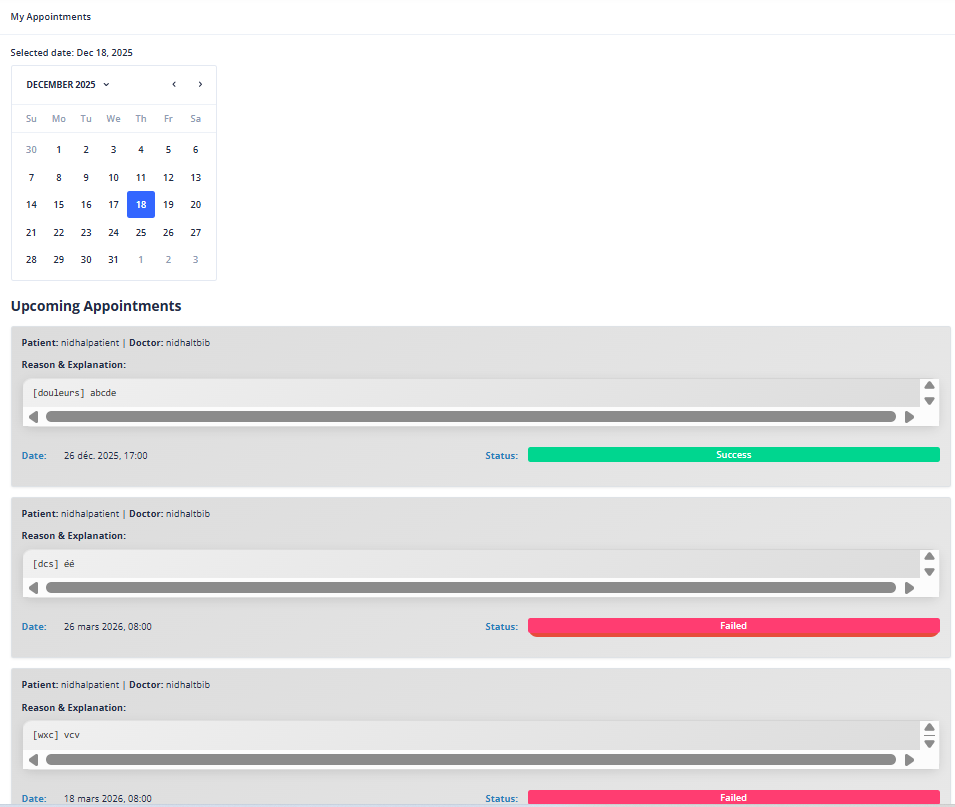
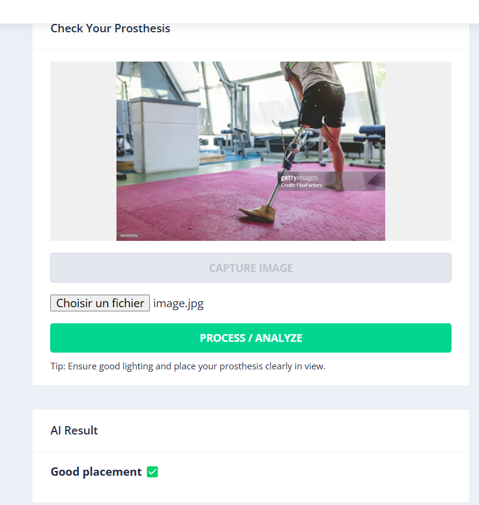
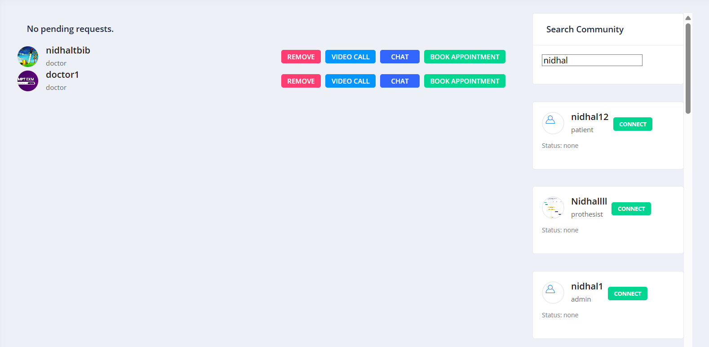
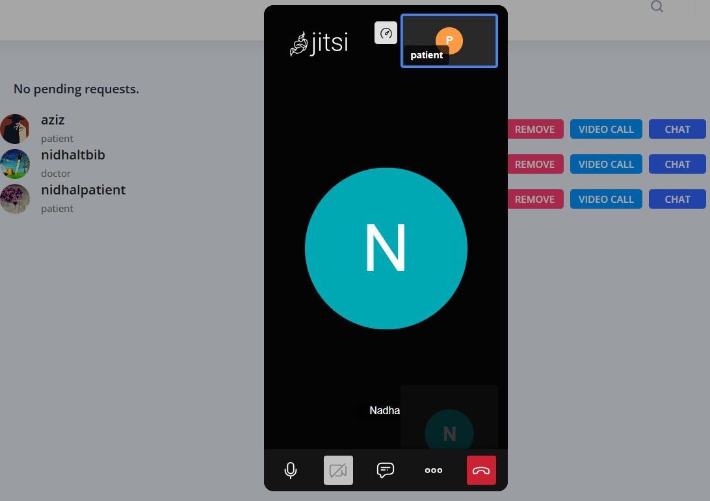
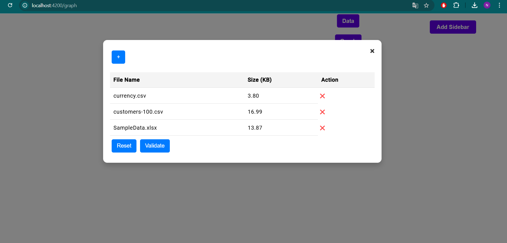
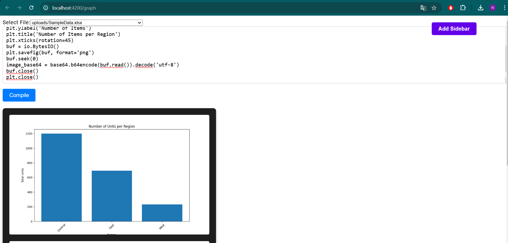
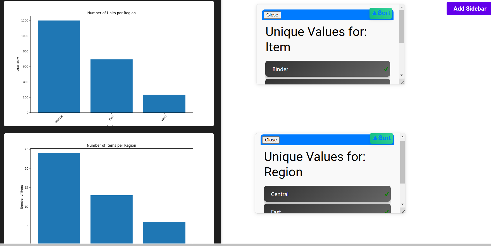
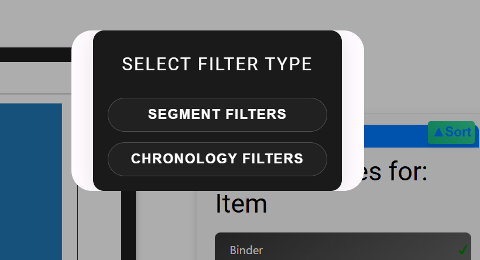
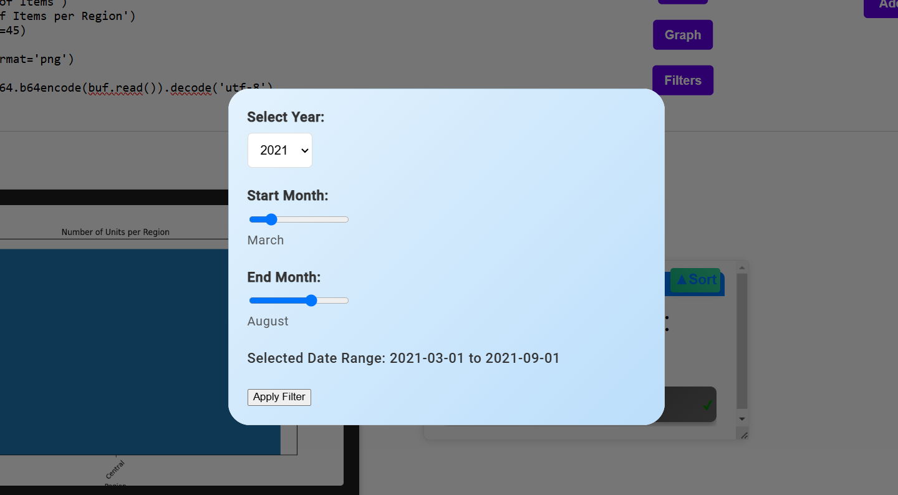
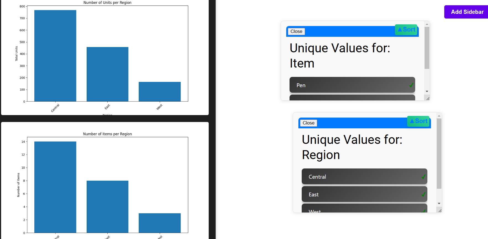

About Me
I'm a Software Engineer with hands-on experience building full-stack applications, backend services, data-driven platforms, and AI-powered features using technologies such as Angular, Django, Spring Boot, Python, and Java.
I enjoy working across the software lifecycle — from designing REST APIs and relational data models to integrating real-time communication, debugging systems, writing tests, and automating build and deployment workflows.
My engineering interests sit at the intersection of software development, systems, AI, and DevOps. I approach problems analytically, learn quickly, and enjoy understanding how the different layers of a system work together.
- Full-Stack Development: End-to-end application development using Angular, Django REST Framework, and Spring Boot.
- Backend & APIs: RESTful services, authentication, business logic, relational data modeling, and system integration.
- AI Integration: Integration of computer vision and YOLO-based machine learning capabilities into application workflows.
- DevOps & Engineering: Linux, Docker, Jenkins, GitHub Actions, CI/CD, SonarQube, monitoring, testing, and troubleshooting.
Technical Skills
Languages & Frameworks
DevOps & Cloud Systems
Databases & Data Systems
AI, Testing & Engineering
Work Experience
Software Engineer — End-of-Studies Project
Medico International Services • Tunis, Tunisia 2025- Full-Stack Development: Developed a digital healthcare platform using Angular and Django REST Framework, implementing authentication, PostgreSQL data models, user management, scheduling, and treatment workflows.
- Real-Time Systems: Implemented real-time messaging and notifications using Django Channels, WebSockets, and Redis, enabling live communication and application updates.
- AI Integration: Integrated a YOLO-based computer vision pipeline into the application to process medical images and return AI-assisted analysis results through the platform.
- Engineering & Validation: Designed REST APIs, integrated frontend and backend components, performed API testing and debugging, and worked across the application's end-to-end workflow.
Software Engineering Intern
IC CANADA • Remote / Tunis 2024- Full-Stack Development: Developed frontend features using Angular and backend REST APIs using Django for a business intelligence and ERP platform.
- Data & Business Workflows: Worked with relational SQL data, business processes, and data flows supporting reporting and management functionality.
- Software Engineering: Participated in requirements analysis, debugging, troubleshooting, feature development, and integration of frontend and backend components.
Key Projects
Medico — AI-Powered Healthcare Platform
Angular • Django REST Framework • PostgreSQL • WebSockets • Redis • YOLO

A full-stack healthcare platform designed to centralize healthcare workflows, medical data management, real-time communication, and AI-assisted medical image analysis. The project combines an Angular frontend with a Django REST backend and integrates a YOLO-based computer vision pipeline directly into the application workflow.
Key Engineering Features
- AI-assisted medical image analysis using a YOLO-based computer vision pipeline.
- RESTful backend architecture developed with Django REST Framework.
- Real-time communication using WebSockets for messaging and live application updates.
- Healthcare workflow management including appointment-related functionality and medical data.
- Authentication and user management for different application workflows.
- Real-time video communication integrated into the healthcare platform.
Architecture
The application follows a separated frontend/backend architecture, with Angular handling the user interface, Django REST Framework providing the API and business logic, PostgreSQL handling persistent data, and the AI pipeline processing medical images.

AI Image Analysis
Community
Video CommunicationTechnology Stack
BI Management — Interactive Data & Visualization Platform
Angular • Django REST Framework • Python • SQL • Matplotlib • Nebular UI
Full-stack Business Intelligence platform that transforms uploaded CSV/XLSX datasets into interactive visualizations through a flexible data processing and filtering workflow.
Key Features
- Dataset upload and validation for CSV/XLSX files
- Python/Matplotlib-based dynamic chart generation
- Interactive segment and chronological filtering
- Dynamic dashboard updates based on selected parameters
- Low-code workflow configuration
- Authentication and role-based access control






Workflow: Upload → Process → Visualize → Filter → Recalculate → Display
View Project on GitHub →Kaddem — Spring Boot & DevOps
Java • Spring Boot • MySQL • JPA • JUnit • Jenkins • Docker • SonarQube
Collaborative Spring Boot backend developed at ESPRIT, combining REST API development and persistence with an automated DevOps workflow for testing, code quality analysis, containerization, and deployment.
My Contribution
- Spring Boot backend and REST API development
- Spring Data JPA and MySQL persistence
- Unit testing with JUnit and Mockito
- Jenkins CI/CD pipeline implementation
- Automated SonarQube code quality analysis
- Docker containerization and Docker Compose deployment
- Maven build automation and Nexus integration
CI/CD Workflow: Test → Analyze → Build → Containerize → Publish → Deploy
View Project on GitHub →Leadership & Community
Chairman — DeepFlow AI Club
ESPRIT • 2023–2024Led an AI-focused student organization at ESPRIT, coordinating technical activities, workshops, and machine learning initiatives. Organized and coordinated AI HackFlow 2.0 at the City of Sciences in Tunis, bringing together speakers, participants, technical workshops, and event logistics.
Chairman — IPEIT Club
IPEIT • 2021Led student initiatives and coordinated the Road to 5.0 event, focused on Artificial Intelligence, emerging technologies, and Industry 5.0.
Education
Software Engineering
ESPRIT — Ecole Supérieure Privée d'Ingénierie et de Technologies
2022 – 2025Preparatory Studies — Physics & Chemistry
IPEIT — Institut Préparatoire aux Études d'Ingénieurs de Tunis
2019 – 2022Languages
Let's Connect
I'm currently open to software engineering opportunities, particularly in backend, full-stack, AI, DevOps, and systems-oriented roles.
📄 Download CV